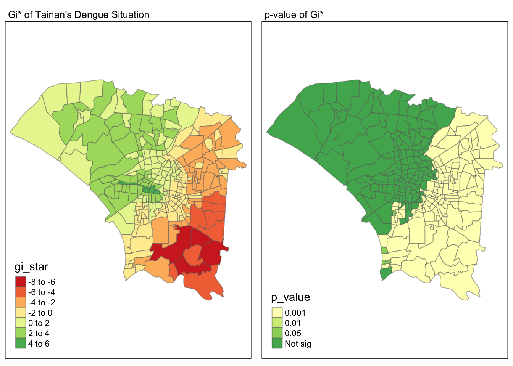
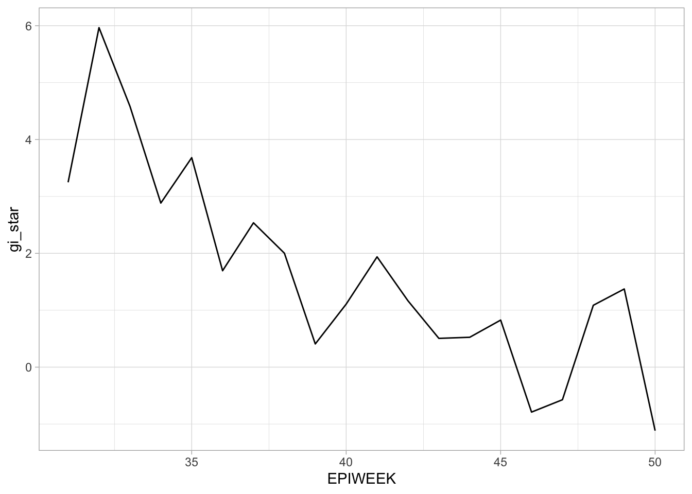

pacman::p_load(sf, sfdep, tmap, tidyverse, knitr, GWmodel, dplyr, plotly)Take-home Exercise 2: Application of Spatial and Spatio-temporal Analysis Methods to Discover the Distribution of Dengue Fever in Tainan City, Taiwan
0. Getting Started
We need to ensure that sf, sfdep, tmap, tidyverse, knitr, GWmodel, dplyr and plotly packages of R are currently installed in our R.
1. Overview of Datasets
Let’s analyse and understand more the datasets that we will be importing.
1.1 Dataset 1: TAIWAN_VILLAGE_2020
This dataset is from Taiwan’s government page “https://data.gov.tw/en/datasets/130549”. It is in ESRI shapefile format, a geospatial data of a village boundary of Tainan, Taiwan.
The code chunk below using “st_read()” of sf package imports “TAIWAN_VILLAGE_2020” shapefile into R. The imported shapefile will be simple features Object of sf known as tainan.
Note that tainan_sf here is a sf object.
tainan_sf <- st_read(dsn = "data/geospatial", layer = "TAINAN_VILLAGE")Reading layer `TAINAN_VILLAGE' from data source
`/Users/fangqilim/fangqi611/IS415-GAA/Take-home_Ex/Take-home_Ex02/data/geospatial'
using driver `ESRI Shapefile'
Simple feature collection with 649 features and 10 fields
Geometry type: POLYGON
Dimension: XY
Bounding box: xmin: 120.0269 ymin: 22.88751 xmax: 120.6563 ymax: 23.41374
Geodetic CRS: TWD97We will learn how to bring this geospatial data “TAIWAN_VILLAGE_2020” and its associated attribute table “Dengue_Daily.csv” (mentioned below) into R environment later on.
1.2 Dataset 2: Dengue_Daily.csv
As mentioned above, we will now import “Dengue_Daily.csv” into R by using read_csv() of readr package. The output is a R dataframe class. This data is an aspatial data of reported dengue cases in Taiwan since 1998 from Taiwan CDC Open Data Portal “https://data.cdc.gov.tw/en/dataset/dengue-daily-determined-cases-1998” and these cases are already confirmed.
We will also be renaming these 4 columns: 1. ONSET_DATE = “發病日”, 2. CITY = “居住縣市”, 3. LONGITUDE = “最小統計區中心點X”, 4. LATITUDE = “最小統計區中心點Y”
Do note that for this dengue dataframe, we are only concerned with columns 1, 3 and 4 for our study, the renamed names in English are also their definitions in English.
We will then use mutate() from dyplyr to create new columns, ONSET_YEAR, ONSET_MONTH and EPIWEEK to perform our analysis on the number of cases per week for each village during epidemiology week 31st to 50th of year 2023.
dengue <- read_csv("data/aspatial/Dengue_Daily.csv") %>%
rename(ONSET_DATE = "發病日",
CITY = "居住縣市",
LONGITUDE = "最小統計區中心點X",
LATITUDE = "最小統計區中心點Y") %>%
mutate(ONSET_YEAR = year(ONSET_DATE),
ONSET_MONTH = month(ONSET_DATE,
label = TRUE,
abbr = TRUE),
EPIWEEK = epiweek(ONSET_DATE))1.3 Filtering the Data & Performing Relational Joint
1.3.1 Filtering the Data
Before performing a relational joint, we need to a study area layer in tainan in sf polygon features. We are going to filter it to village level and confine it to D01, D02, D04, D06, D07, D08, D32 and D39 as that is our area of study for this assignment. We will also be changing the crs to “3824” which is TWD97, Taiwan’s CRS in order to perform an intersection later with the dengue dataframe.
tainan_sf <- tainan_sf %>%
filter(TOWNID %in% c("D01", "D02", "D04", "D06", "D07", "D08", "D32", "D39")) %>%
st_transform(crs = 3824)tainan_sfSimple feature collection with 258 features and 10 fields
Geometry type: POLYGON
Dimension: XY
Bounding box: xmin: 120.0627 ymin: 22.89401 xmax: 120.2925 ymax: 23.09144
Geodetic CRS: TWD97
First 10 features:
VILLCODE COUNTYNAME TOWNNAME VILLNAME VILLENG COUNTYID COUNTYCODE
1 67000350032 臺南市 安南區 青草里 Qingcao Vil. D 67000
2 67000270011 臺南市 仁德區 保安里 Bao'an Vil. D 67000
3 67000370005 臺南市 中西區 赤嵌里 Chihkan Vil. D 67000
4 67000330004 臺南市 南區 大成里 Dacheng Vil. D 67000
5 67000350028 臺南市 安南區 城北里 Chengbei Vil. D 67000
6 67000350030 臺南市 安南區 城南里 Chengnan Vil. D 67000
7 67000370009 臺南市 中西區 法華里 Fahua Vil. D 67000
8 67000350017 臺南市 安南區 海南里 Hainan Vil. D 67000
9 67000350049 臺南市 安南區 國安里 Guo'an Vil. D 67000
10 67000350018 臺南市 安南區 溪心里 Xixin Vil. D 67000
TOWNID TOWNCODE NOTE geometry
1 D06 67000350 <NA> POLYGON ((120.1176 23.08387...
2 D32 67000270 <NA> POLYGON ((120.2304 22.93544...
3 D08 67000370 <NA> POLYGON ((120.2012 22.99966...
4 D02 67000330 <NA> POLYGON ((120.1985 22.98147...
5 D06 67000350 <NA> POLYGON ((120.1292 23.06512...
6 D06 67000350 <NA> POLYGON ((120.1246 23.06904...
7 D08 67000370 <NA> POLYGON ((120.2094 22.98452...
8 D06 67000350 <NA> POLYGON ((120.175 23.02218,...
9 D06 67000350 <NA> POLYGON ((120.1866 23.02766...
10 D06 67000350 <NA> POLYGON ((120.1834 23.06086...As there are “None” values under LONGITUDE and LATITUDE fields, we will be removing them by connverting to”NA” using as.numeric() function, then remove them using is.na() function.
dengue$LONGITUDE <- as.numeric(dengue$LONGITUDE)
dengue$LATITUDE <- as.numeric(dengue$LATITUDE)dengue <- dengue[!is.na(as.numeric(dengue$LONGITUDE)),]
dengue <- dengue[!is.na(as.numeric(dengue$LATITUDE)),]We will also need to change dengue dataframe to Taiwan CRS which is TWD97/3824 to perform an intersection with tainan dataframe later.
dengue <- st_as_sf(dengue,
coords = c("LONGITUDE", "LATITUDE"),
crs=3824)
dengueSimple feature collection with 106081 features and 27 fields
Geometry type: POINT
Dimension: XY
Bounding box: xmin: 118.3081 ymin: 21.92574 xmax: 121.9826 ymax: 26.15617
Geodetic CRS: TWD97
# A tibble: 106,081 × 28
ONSET_DATE 個案研判日 通報日 性別 年齡層 CITY 居住鄉鎮 居住村里
* <date> <chr> <date> <chr> <chr> <chr> <chr> <chr>
1 1998-01-02 None 1998-01-07 男 40-44 屏東縣 屏東市 None
2 1998-01-03 None 1998-01-14 男 30-34 屏東縣 東港鎮 None
3 1998-01-13 None 1998-02-18 男 55-59 宜蘭縣 宜蘭市 None
4 1998-01-15 None 1998-01-23 男 35-39 高雄市 苓雅區 None
5 1998-01-20 None 1998-02-04 男 55-59 宜蘭縣 五結鄉 None
6 1998-01-23 None 1998-02-02 男 40-44 新北市 新店區 None
7 1998-01-26 None 1998-02-19 女 65-69 台北市 北投區 None
8 1998-02-11 None 1998-02-13 女 25-29 台南市 南區 None
9 1998-02-16 None 1998-02-24 男 20-24 高雄市 楠梓區 None
10 1998-02-17 None 1998-02-23 女 30-34 高雄市 鳳山區 None
# ℹ 106,071 more rows
# ℹ 20 more variables: 最小統計區 <chr>, 一級統計區 <chr>, 二級統計區 <chr>,
# 感染縣市 <chr>, 感染鄉鎮 <chr>, 感染村里 <chr>, 是否境外移入 <chr>,
# 感染國家 <chr>, 確定病例數 <dbl>, 居住村里代碼 <chr>, 感染村里代碼 <chr>,
# 血清型 <chr>, 內政部居住縣市代碼 <chr>, 內政部居住鄉鎮代碼 <chr>,
# 內政部感染縣市代碼 <chr>, 內政部感染鄉鎮代碼 <chr>, ONSET_YEAR <dbl>,
# ONSET_MONTH <ord>, EPIWEEK <dbl>, geometry <POINT [°]>Remember, we need to confine the dengue dataframe to epidemiology week 31-50, 2023 as that is our area of study, explaining the code chunk below:
dengue <- dengue %>%
filter(EPIWEEK >= 31 & EPIWEEK <= 50,
CITY == "台南市",
ONSET_YEAR == "2023")Now, after cleaning our dataset to the area we are interested, we can intersect them. We are going to save it using readr() package so save processing time. We group the dataframe by VILLCODE and EPIWEEK, dengue_vil_epi, which gives us the number of cases per week for each village during epidemiology week 31st to 50th of year 2023.
dengue_vil <- st_intersection(dengue, tainan_sf)write_rds(dengue_vil, "data/rds/dengue_vil.rds")dengue_vil <- read_rds("data/rds/dengue_vil.rds")dengue_vil <- dengue_vil %>%
mutate(case = 1)dengue_vil_epi <- dengue_vil %>%
group_by(VILLCODE, EPIWEEK) %>%
summarise(count = sum(case)) %>%
complete(EPIWEEK = 31:50, fill = list(count = 0)) %>%
st_drop_geometry()write_rds(dengue_vil_epi, "data/rds/dengue_vil_epi.rds")dengue_vil_epi <- read_rds("data/rds/dengue_vil_epi.rds")class(dengue_vil_epi)[1] "grouped_df" "tbl_df" "tbl" "data.frame"1.3.2 Performing Relational Joint
We will now then be performing a relational joint to update Tainan’s dataframe with the time frame we want with the attribute fields of the dengue dataframe using “dengue_vil_epi”. This is performed using the left_join() function.
Do note that as the left hand side data, tainan_sf, in left_join() function is a sf layer so the return output ‘tainan’ is also a sf object.
tainan <- left_join(tainan_sf, dengue_vil_epi)
tainanSimple feature collection with 258 features and 12 fields
Geometry type: POLYGON
Dimension: XY
Bounding box: xmin: 120.0627 ymin: 22.89401 xmax: 120.2925 ymax: 23.09144
Geodetic CRS: TWD97
First 10 features:
VILLCODE COUNTYNAME TOWNNAME VILLNAME VILLENG COUNTYID COUNTYCODE
1 67000350032 臺南市 安南區 青草里 Qingcao Vil. D 67000
2 67000270011 臺南市 仁德區 保安里 Bao'an Vil. D 67000
3 67000370005 臺南市 中西區 赤嵌里 Chihkan Vil. D 67000
4 67000330004 臺南市 南區 大成里 Dacheng Vil. D 67000
5 67000350028 臺南市 安南區 城北里 Chengbei Vil. D 67000
6 67000350030 臺南市 安南區 城南里 Chengnan Vil. D 67000
7 67000370009 臺南市 中西區 法華里 Fahua Vil. D 67000
8 67000350017 臺南市 安南區 海南里 Hainan Vil. D 67000
9 67000350049 臺南市 安南區 國安里 Guo'an Vil. D 67000
10 67000350018 臺南市 安南區 溪心里 Xixin Vil. D 67000
TOWNID TOWNCODE NOTE EPIWEEK count geometry
1 D06 67000350 <NA> NA NA POLYGON ((120.1176 23.08387...
2 D32 67000270 <NA> NA NA POLYGON ((120.2304 22.93544...
3 D08 67000370 <NA> NA NA POLYGON ((120.2012 22.99966...
4 D02 67000330 <NA> NA NA POLYGON ((120.1985 22.98147...
5 D06 67000350 <NA> NA NA POLYGON ((120.1292 23.06512...
6 D06 67000350 <NA> NA NA POLYGON ((120.1246 23.06904...
7 D08 67000370 <NA> NA NA POLYGON ((120.2094 22.98452...
8 D06 67000350 <NA> NA NA POLYGON ((120.175 23.02218,...
9 D06 67000350 <NA> NA NA POLYGON ((120.1866 23.02766...
10 D06 67000350 <NA> NA NA POLYGON ((120.1834 23.06086...1.4 Describing Tainan’s Dengue Cases
We are going to describe Tainan’s dengue cases so by plotting a choropleth map to see it visually using the code chunk below:
tmap_mode("plot")
tm_shape(tainan) +
tm_fill(col = "VILLCODE",
shape = 21,
style = "quantile",
palette = "Blues",
title = "Dengue Cases",
data = tainan) +
tm_layout(main.title = "Dengue Cases in Tainan",
main.title.position = "center",
main.title.size = 1.2,
legend.height = 0.45,
legend.width = 0.35,
frame = TRUE) +
tm_borders(alpha = 0.5) +
tm_compass(type="8star", size = 2) +
tm_scale_bar() +
tm_grid(alpha =0.2)From here, we can make a case that as we go up North and slightly South of Tainan, we can find more dengue cases there.
2. Peforming Global Spatial Autocorrelation Analysis using sfdep Methods
2.1 Deriving contiguity weights: Queen’s method
We are going to derive the contiguity weights by using spdep and tidyverse functions to define the relationships between the geographical units in our study area.
Queen method is used to derive the contiguity weight as shown in the code chunk below:
wm_q <- tainan %>%
mutate(nb = st_contiguity(geometry),
wt = st_weights(nb,
style = "W"),
.before = 1) wm_qSimple feature collection with 258 features and 14 fields
Geometry type: POLYGON
Dimension: XY
Bounding box: xmin: 120.0627 ymin: 22.89401 xmax: 120.2925 ymax: 23.09144
Geodetic CRS: TWD97
First 10 features:
nb
1 6, 118, 160
2 126, 128, 138, 168, 222
3 68, 69, 172, 181, 184, 185, 188, 200
4 94, 97, 100, 104, 182, 207
5 12, 13, 249, 255
6 1, 12, 13, 118, 160, 165, 249
7 54, 98, 99, 201
8 9, 73, 75, 115, 125, 144, 156, 157, 166, 186
9 8, 110, 115, 125, 166
10 11, 159, 161, 166, 236, 258
wt
1 0.3333333, 0.3333333, 0.3333333
2 0.2, 0.2, 0.2, 0.2, 0.2
3 0.125, 0.125, 0.125, 0.125, 0.125, 0.125, 0.125, 0.125
4 0.1666667, 0.1666667, 0.1666667, 0.1666667, 0.1666667, 0.1666667
5 0.25, 0.25, 0.25, 0.25
6 0.1428571, 0.1428571, 0.1428571, 0.1428571, 0.1428571, 0.1428571, 0.1428571
7 0.25, 0.25, 0.25, 0.25
8 0.1, 0.1, 0.1, 0.1, 0.1, 0.1, 0.1, 0.1, 0.1, 0.1
9 0.2, 0.2, 0.2, 0.2, 0.2
10 0.1666667, 0.1666667, 0.1666667, 0.1666667, 0.1666667, 0.1666667
VILLCODE COUNTYNAME TOWNNAME VILLNAME VILLENG COUNTYID COUNTYCODE
1 67000350032 臺南市 安南區 青草里 Qingcao Vil. D 67000
2 67000270011 臺南市 仁德區 保安里 Bao'an Vil. D 67000
3 67000370005 臺南市 中西區 赤嵌里 Chihkan Vil. D 67000
4 67000330004 臺南市 南區 大成里 Dacheng Vil. D 67000
5 67000350028 臺南市 安南區 城北里 Chengbei Vil. D 67000
6 67000350030 臺南市 安南區 城南里 Chengnan Vil. D 67000
7 67000370009 臺南市 中西區 法華里 Fahua Vil. D 67000
8 67000350017 臺南市 安南區 海南里 Hainan Vil. D 67000
9 67000350049 臺南市 安南區 國安里 Guo'an Vil. D 67000
10 67000350018 臺南市 安南區 溪心里 Xixin Vil. D 67000
TOWNID TOWNCODE NOTE EPIWEEK count geometry
1 D06 67000350 <NA> NA NA POLYGON ((120.1176 23.08387...
2 D32 67000270 <NA> NA NA POLYGON ((120.2304 22.93544...
3 D08 67000370 <NA> NA NA POLYGON ((120.2012 22.99966...
4 D02 67000330 <NA> NA NA POLYGON ((120.1985 22.98147...
5 D06 67000350 <NA> NA NA POLYGON ((120.1292 23.06512...
6 D06 67000350 <NA> NA NA POLYGON ((120.1246 23.06904...
7 D08 67000370 <NA> NA NA POLYGON ((120.2094 22.98452...
8 D06 67000350 <NA> NA NA POLYGON ((120.175 23.02218,...
9 D06 67000350 <NA> NA NA POLYGON ((120.1866 23.02766...
10 D06 67000350 <NA> NA NA POLYGON ((120.1834 23.06086...2.2 Computing Global Moran’ I
Moran’s I is a statistic used to measure spatial autocorrelation, which is the degree to which nearby observations in a geographic space are similar to each other. Over here, we are measuring the overall spatial pattern of a variable, geometry, in our study area.
Global Moran I test gives us the test statistic, we want to find out the moran test statistic and p-value so we can decide if this observation we have is statistically significant or not. However, we do not do this, we do Global Moran’ I permutation test as shown in the code chunk below instead:
set.seed(1234)
wm_q$VILLCODE <- as.numeric(wm_q$VILLCODE)
global_moran_perm(wm_q$VILLCODE,
wm_q$nb,
wm_q$wt,
nsim = 99)
Monte-Carlo simulation of Moran I
data: x
weights: listw
number of simulations + 1: 100
statistic = 0.83543, observed rank = 100, p-value < 2.2e-16
alternative hypothesis: two.sidedThe statistical report above show that the p-value is smaller than alpha value of 0.05.Hence, we have enough statistical evidence to reject the null hypothesis and accept H1 that the outbreak is indeed spatial and spatio-temporal dependentas the spatial distribution are autocorrelated.
3. Peforming Local Spatial Autocorrelation Analysis using sfdep Methods
3.1 Computing local Moran’s I
Computing Local Moran’s I of dengue cases at village level using local_moran() of sfdep package.
lisa <- wm_q %>%
mutate(local_moran = local_moran(
VILLCODE, nb, wt, nsim = 99),
.before = 1) %>%
unnest(local_moran)The output of local_moran() is a sf data.frame containing the columns ii, eii, var_ii, z_ii, p_ii, p_ii_sim, and p_folded_sim.
ii: local moran statistic
eii: expectation of local moran statistic; for localmoran_permthe permutation sample means
var_ii: variance of local moran statistic; for localmoran_permthe permutation sample standard deviations
z_ii: standard deviate of local moran statistic; for localmoran_perm based on permutation sample means and standard deviations p_ii: p-value of local moran statistic using pnorm(); for localmoran_perm using standard deviatse based on permutation sample means and standard deviations p_ii_sim: For localmoran_perm(), rank() and punif() of observed statistic rank for [0, 1] p-values using alternative= -p_folded_sim: the simulation folded [0, 0.5] range ranked p-value (based on https://github.com/pysal/esda/blob/4a63e0b5df1e754b17b5f1205b cadcbecc5e061/esda/crand.py#L211-L213)
p_folded_sim: the simulation folded [0, 0.5] range ranked p-value (based on https://github.com/pysal/esda/blob/4a63e0b5df1e754b17b5f1205b cadcbecc5e061/esda/crand.py#L211-L213)
skewness: For localmoran_perm, the output of e1071::skewness() for the permutation samples underlying the standard deviates
kurtosis: For localmoran_perm, the output of e1071::kurtosis() for the permutation samples underlying the standard deviates.
3.2 Visualising local Moran’s I
In this code chunk below, tmap functions are used prepare a choropleth map by using value in the ii field.
tmap_mode("plot")
tm_shape(lisa) +
tm_fill("ii") +
tm_borders(alpha = 0.5) +
tm_view(set.zoom.limits = c(6,8)) +
tm_layout(main.title = "Local Moran's I of Tainan's Dengue Cases",
main.title.size = 0.8)3.3 Visualising p-value of local Moran’s I
In the code chunk below, tmap functions are used prepare a choropleth map by using value in the p_ii_sim field.
tmap_mode("plot")
tm_shape(lisa) +
tm_fill("p_ii_sim") +
tm_borders(alpha = 0.5) +
tm_layout(main.title = "p-value of local Moran's I",
main.title.size = 0.8)
3.4 Visuaising local Moran’s I and p-value
For effective comparison, let us plot both maps next to each other as shown in the code chunk below:
tmap_mode("plot")
map1 <- tm_shape(lisa) +
tm_fill("ii") +
tm_borders(alpha = 0.5) +
tm_view(set.zoom.limits = c(6,8)) +
tm_layout(main.title = "local Moran's I of GDPPC",
main.title.size = 0.8)
map2 <- tm_shape(lisa) +
tm_fill("p_ii",
breaks = c(0, 0.001, 0.01, 0.05, 1),
labels = c("0.001", "0.01", "0.05", "Not sig")) +
tm_borders(alpha = 0.5) +
tm_layout(main.title = "p-value of local Moran's I",
main.title.size = 0.8)
tmap_arrange(map1, map2, ncol = 2)3.5 Visualising LISA map
LISA map is a categorical map showing outliers and clusters. There are two types of outliers namely: High-Low and Low-High outliers. Likewise, there are two type of clusters namely: High-High and Low-Low cluaters of dengue cases in Tainan.
Additionally, by performing this in-depth analysis we gather more insight about the dengue problem in Tainan, the more serious and highly clustered dengue cases coloured in red are to the West of Tainan and slightly central. On the other hand, the less serious cases coloured in green are towards the East and South of Tainan.
lisa_sig <- lisa %>%
filter(p_ii < 0.05)
tmap_mode("plot")
tm_shape(lisa) +
tm_polygons() +
tm_borders(alpha = 0.5) +
tm_shape(lisa_sig) +
tm_fill("mean") +
tm_borders(alpha = 0.4)4. Hot Spot and Cold Spot Area Analysis (HCSA)
HCSA uses spatial weights to identify locations of statistically significant hot spots and cold spots in an spatially weighted attribute that are in proximity to one another based on a calculated distance. The analysis groups features when similar high (hot) or low (cold) values are found in a cluster. The polygon features usually represent administration boundaries or a custom grid structure.
4.1 Computing local Gi* statistics
We need toderive a spatial weight matrix before we can compute local Gi* statistics. Code chunk below will be used to derive a spatial weight matrix by using sfdep functions and tidyverse approach.
wm_idw <- tainan %>%
mutate(nb = st_contiguity(geometry),
wts = st_inverse_distance(nb, geometry,
scale = 1,
alpha = 1),
.before = 1)The numbers of simulation is alway equal to nsim + 1. This mean in nsim = 99. This mean 100 simulation will be performed.
Before computing HCSA, we need to convert VILLCODE to numeric in order to compute it.
wm_idw$VILLCODE <- as.numeric(wm_idw$VILLCODE)HCSA <- wm_idw %>%
mutate(local_Gi = local_gstar_perm(
VILLCODE, nb, wt, nsim = 99),
.before = 1) %>%
unnest(local_Gi)
HCSASimple feature collection with 258 features and 22 fields
Geometry type: POLYGON
Dimension: XY
Bounding box: xmin: 120.0627 ymin: 22.89401 xmax: 120.2925 ymax: 23.09144
Geodetic CRS: TWD97
# A tibble: 258 × 23
gi_star e_gi var_gi p_value p_sim p_folded_sim skewness kurtosis nb
<dbl> <dbl> <dbl> <dbl> <dbl> <dbl> <dbl> <dbl> <nb>
1 1.60 0.00388 3.53e-19 1.39 1.64e-1 0.1 0.05 -0.640 <int>
2 -6.34 0.00388 2.97e-19 -5.39 7.18e-8 0.02 0.01 -0.219 <int>
3 2.99 0.00388 1.72e-19 2.55 1.08e-2 0.02 0.01 -0.0536 <int>
4 1.17 0.00388 1.79e-19 1.38 1.68e-1 0.2 0.1 -0.00550 <int>
5 1.79 0.00388 2.39e-19 2.07 3.81e-2 0.02 0.01 -0.572 <int>
6 2.28 0.00388 1.90e-19 2.22 2.61e-2 0.04 0.02 -0.261 <int>
7 1.22 0.00388 2.51e-19 0.599 5.49e-1 0.62 0.31 -0.402 <int>
8 2.95 0.00388 1.95e-19 2.51 1.22e-2 0.02 0.01 -0.164 <int>
9 1.97 0.00388 2.52e-19 2.00 4.55e-2 0.06 0.03 -0.123 <int>
10 2.13 0.00388 2.54e-19 1.86 6.35e-2 0.04 0.02 -0.179 <int>
# ℹ 248 more rows
# ℹ 14 more variables: wts <list>, VILLCODE <dbl>, COUNTYNAME <chr>,
# TOWNNAME <chr>, VILLNAME <chr>, VILLENG <chr>, COUNTYID <chr>,
# COUNTYCODE <chr>, TOWNID <chr>, TOWNCODE <chr>, NOTE <chr>, EPIWEEK <dbl>,
# count <dbl>, geometry <POLYGON [°]>4.2 Visualising Gi*
tmap_mode("plot")
tm_shape(HCSA) +
tm_fill("gi_star") +
tm_borders(alpha = 0.5) +
tm_view(set.zoom.limits = c(6,8))4.3 Visualising p-value of HCSA
tmap_mode("plot")
tm_shape(HCSA) +
tm_fill("p_sim") +
tm_borders(alpha = 0.5)4.4 Visuaising local HCSA
tmap_mode("plot")
map1 <- tm_shape(HCSA) +
tm_fill("gi_star") +
tm_borders(alpha = 0.5) +
tm_view(set.zoom.limits = c(6,8)) +
tm_layout(main.title = "Gi* of Tainan's Dengue Situation",
main.title.size = 0.8)
map2 <- tm_shape(HCSA) +
tm_fill("p_value",
breaks = c(0, 0.001, 0.01, 0.05, 1),
labels = c("0.001", "0.01", "0.05", "Not sig")) +
tm_borders(alpha = 0.5) +
tm_layout(main.title = "p-value of Gi*",
main.title.size = 0.8)
tmap_arrange(map1, map2, ncol = 2)
4.5 Visualising hot spot and cold spot areas
Now, we are ready to plot the significant (i.e. p-values less than 0.05) hot spot and cold spot areas by using appropriate tmap functions as shown below.
HCSA_sig <- HCSA %>%
filter(p_sim < 0.05)
tmap_mode("plot")
tm_shape(HCSA) +
tm_polygons() +
tm_borders(alpha = 0.5) +
tm_shape(HCSA_sig) +
tm_fill("gi_star") +
tm_borders(alpha = 0.4)The figure above reveals that there is only one hotspot area located at the South-East of Tainan and one coldspot area slightly left of the central of Tainan. The hotspot area does coincide with our results of local Moran I method in 3.2 earlier.
5. Emerging Hot Spot Analysis: sfdep methods
This analysis consists of 4 main steps:
Step 1: Building a space-time cube, Step 2: Calculating Getis-Ord local Gi* statistic for each bin by using an FDR correction, Step 3: Evaluating these hot and cold spot trends by using Mann-Kendall trend test, Step 4: Categorising each study area location by referring to the resultant trend z-score and p-value for each location with data, and with the hot spot z-score and p-value for each bin.
5.1 Step 1: Creating a Time Series Cube
In the code chunk below, spacetime() of sfdep is used to create an spatio-temporal cube. We are performing step 1 of building a space-time cube.
However, before beginning our analysis, we need to remove VILLCODE = 67000350035 because it is not aligned n x n rows with dengue_vil_epi to create a spacetime cube.
tainan_sf <- tainan_sf %>%
filter(VILLCODE!= 67000350035)We also need to convert dengue_vil_epi into a tibble dataframe in order to create a spacetime cube.
dengue_vil_epi <- as_tibble(dengue_vil_epi)dengue_st <- spacetime(dengue_vil_epi, tainan_sf,
.loc_col = "VILLCODE",
.time_col = "EPIWEEK")Next, is_spacetime_cube() of sfdep package will be used to varify if our dengue_st is indeed an space-time cube object.
is_spacetime_cube(dengue_st)[1] TRUE5.2 Step 2: Computing Gi*
5.2.1 Deriving the spatial weights
The code chunk below will be used to identify neighbors and to derive an inverse distance weights.
dengue_nb <- dengue_st %>%
activate("geometry") %>%
mutate(nb = include_self(st_contiguity(geometry)),
wt = st_inverse_distance(nb, geometry,
scale = 1,
alpha = 1),
.before = 1) %>%
set_nbs("nb") %>%
set_wts("wt")- activate() of dplyr package is used to activate the geometry context
- mutate() of dplyr package is used to create two new columns nb and wt. Then we will activate the data context again and copy over the nb and wt columns to each time-slice using set_nbs() and set_wts()
- The row order is very important so do not rearrange the observations after using set_nbs() or set_wts().
Note that this dataset now has neighbors and weights for each time-slice.
head(dengue_nb)# A tibble: 6 × 6
VILLCODE EPIWEEK count geometry nb wt
<chr> <dbl> <dbl> <GEOMETRY [°]> <list> <list>
1 67000350032 31 0 POINT EMPTY <int [4]> <dbl [4]>
2 67000270011 31 1 POINT (120.2413 22.92115) <int [6]> <dbl [6]>
3 67000370005 31 0 GEOMETRYCOLLECTION EMPTY <int [9]> <dbl [9]>
4 67000330004 31 0 GEOMETRYCOLLECTION EMPTY <int [7]> <dbl [7]>
5 67000350028 31 0 POINT EMPTY <int [5]> <dbl [5]>
6 67000350030 31 0 GEOMETRYCOLLECTION EMPTY <int [7]> <dbl [7]>5.2.2 Computing Gi*
We can use the new columns above to manually calculate the local Gi* for each location. We can do this by grouping by EPIWEEK and using local_gstar_perm() of sfdep package. After which, we use unnest() to unnest gi_star column of the newly created gi_starts data.frame.
In spatial statistics, ∗Gi∗ (pronounced “Gi star”) is a statistic used in hotspot analysis to identify spatial clusters of high or low values in a dataset.
The local Gi* statistic measures the degree of spatial clustering of the “count” variable (presumably the count of dengue cases) within a neighborhood defined by the spatial weight matrix (nb) and distance weights (wt).
For each observation within each EPIWEEK group, we identify statistically significant spatial clusters of dengue cases based on their counts and spatial relationships.
gi_stars <- dengue_nb %>%
group_by(EPIWEEK) %>%
mutate(gi_star = local_gstar_perm(
count, nb, wt)) %>%
tidyr::unnest(gi_star)5.3 Step 3: Mann-Kendall Test
Now we can then evaluate each location for a trend using the Mann-Kendall test.
We are isolating and selecting data related to a specific village (over here I chose 67000320032) and still retaining information about the EPIWEEK and the corresponding local Gi* statistic.
We get output cpg, which is a tibble containing the results of the hotspot analysis of VILLCODE 67000320032.
cbg <- gi_stars %>%
ungroup() %>%
filter(VILLCODE == "67000320032") |>
select(VILLCODE, EPIWEEK, gi_star)Next, we plot the result of cbg by using ggplot2 functions.
ggplot(data = cbg,
aes(x = EPIWEEK,
y = gi_star)) +
geom_line() +
theme_light()
We can also create an interactive plot by using ggplotly() of plotly package.
p <- ggplot(data = cbg,
aes(x = EPIWEEK,
y = gi_star)) +
geom_line() +
theme_light()
ggplotly(p)Mann-Kendall trend test for the gi_star values in the cbg dataframe and spreads the results into separate columns for further analysis or visualization
cbg %>%
summarise(mk = list(
unclass(
Kendall::MannKendall(gi_star)))) %>%
tidyr::unnest_wider(mk)# A tibble: 1 × 5
tau sl S D varS
<dbl> <dbl> <dbl> <dbl> <dbl>
1 -0.642 0.0000865 -122 190. 950In the above result, sl (significance level) is the p-value. Since p-value is smaller than 0.05, this result tells us that there is a slight upward but insignificant trend.
We can replicate this for each location by using group_by() of dplyr package.
ehsa <- gi_stars %>%
group_by(EPIWEEK) %>%
summarise(mk = list(
unclass(
Kendall::MannKendall(gi_star)))) %>%
tidyr::unnest_wider(mk)5.3.1 Arrange to show significant emerging hot/cold spots
emerging <- ehsa %>%
arrange(sl, abs(tau)) %>%
slice(1:5)5.4 Step 4: Performing Emerging Hotspot Analysis
Lastly, we will perform EHSA analysis by using emerging_hotspot_analysis() of sfdep package. It takes a spacetime object x (i.e. dengue_st), and the quoted name of the variable of interest (i.e. count) for .var argument. The k argument is used to specify the number of time lags which is set to 1 by default. Lastly, nsim map numbers of simulation to be performed.
ehsa <- emerging_hotspot_analysis(
x = dengue_st,
.var = "count",
k = 1,
nsim = 99
)write_rds(ehsa, "data/rds/ehsa.rds")ehsa <- read_rds("data/rds/ehsa.rds")5.4.1 Visualising the distribution of EHSA classes
In the code chunk below, ggplot2 functions ised used to reveal the distribution of EHSA classes as a bar chart.
ggplot(data = ehsa,
aes(x = classification)) +
geom_bar()Figure above shows that sporadic cold spots and sporadic hotspot class has the high numbers of tainan.
5.5 Visualising EHSA
In this section, we will learn how to visualise the geographic distribution EHSA classes. However, before we can do so, we need to join both tainan and ehsa together by using the code chunk below.
tainan_sf$VILLCODE <- as.numeric(tainan_sf$VILLCODE)
ehsa$location <- as.numeric(ehsa$location)tainan_ehsa <- tainan_sf %>%
left_join(ehsa,
by = join_by(VILLCODE == location))Next, tmap functions will be used to plot a categorical choropleth map by using the code chunk below.
ehsa_sig <- tainan_ehsa %>%
filter(p_value < 0.2)
tmap_mode("plot")
tm_shape(tainan_ehsa) +
tm_polygons() +
tm_borders(alpha = 0.5) +
tm_shape(ehsa_sig) +
tm_fill("classification") +
tm_borders(alpha = 0.4)6. Describing the Spatial Patterns Revealed
We calculated Gi* statistic which includes the focal (or self, or ith) observation in the neighborhood. With the calculations of the local Gi* for each unit of time for every geography, we can evaluate how the hotspots change over time. We incorporate time-series analysis through the use of the Mann-Kendall (MK) Trend test. This is reflected in Section 5.3 which depicts the dengue cases changing overtime in EPIWEEK as a time series form, giving us a monotonic downward trend. EHSA combines the both of these, Gi* statistic and MK test to evaluate if there are trends in hot or cold spots over time. EHSA utilizes a spacetime cube, for each time-slice (i.e. the complete set of geometries for a given time) the local Gi* is calculated
The p-values in “tainan_ehsa” (which is our derived output from the explanation above) categorizes each study area location into the classification of consecutive coldspot, consecutive hotspot, new coldspot, new hotspot, no pattern detected, oscilating coldspot, oscilating hotspot, sporadic coldspot and sporadic hotspot.
Do note that while the different p-values categorizes them differently, but the fact that they are all smaller than 0.05 means that it suggests that there is a statistically significant clustering of events in both space and time of dengue cases in tainan.
Now, getting into an in-depth analysis of the distribution of the ehsa classes (Section 5.4.1), we focus on “Oscillating Hot Spot” and “Oscillating Cold Spot” as they are the most apparent, though let’s be clear of what they mean first:
Oscillating Cold Spot: A statistically significant cold spot for the final time-step interval that has a history of also being a statistically significant hot spot during a prior time step. Less than ninety percent of the time-step intervals have been statistically significant cold spots.
Oscillating Hot Spot: A statistically significant hot spot for the final time-step interval that has a history of also being a statistically significant cold spot during a prior time step. Less than ninety percent of the time-step intervals have been statistically significant hot spots.
Now, after understanding what do these regions mean, we can make for the opinion and realise that the coldspots in the past are becoming hotspots (orange) and the hotspots in the past are now coldspots (green). In other words, dengue is spreading to other regions while the highly infected areas in the past are calming down now. Do note that there are overall more green areas than orange areas which means that the dengue disease is slightly decreasing but there is still a lot overall in Tainan since it is one of the hotspots.
Furthermore, the fact that Tainan is facing a surge in dengue cases is not surprising, if we refer to Wei-June Chen (2018) “Dengue outbreaks and the geographic distribution of dengue vectors in Taiwan: A 20-year epidemiological analysis”, Biomedical Journal, Volume 41, Issue 5, pp. 283-289. He discussed the skewed prevalence of dengue cases in Taiwan, while the North region is relatively stable, the South region of Taiwan is heavily affected and Tainan is one of them.
Interestingly, the sporadic coldspots (in pink) which means these areas has continuously faced low dengue cases overtime. According to Chen’s findings, dengue cases breed at tropical climate. We can make for the opinion that maybe because most of these areas are towards the border of Tainan and facing the sea, it is less humid and not a very desirable environment for the mosquitos to breed.
Additionally, performing EHSA has provided us insight about the change of the dengue cases overtime into this situation. By comparing to Section 4.5 where we visualise local HCSA, we plotted the graph where p_sim < 0.05. Using p_sim means that we are only assessing the significance of observed spatial patterns or clusters by comparing them to what would be expected under a null hypothesis of spatial randomness. A low p_sim suggests spatial clustering or deviation from randomness.
However, this mathematical analysis does not describe the situation and change happening in Tainan, and the scope of study using p_sim is very narrow and does not give us a lot of analysis or insight (after explaining what using p_sim means). While EHSA is able to do this by showing that dengue is spreading to other areas where more dengue cases are forming up North of Tainan.
In conclusion, if we need an overview of the dengue situation, the graph in Section 4.5 is good to get a general idea but the EHSA graph in Section 5.5 is better. It can describe and depict even a broader and more in-depth situation of the change about the dengue situation in Tainan overtime from 31st to 50th week of 2023 in each village.